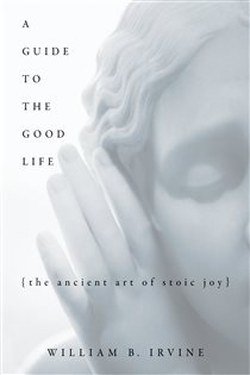

Library › Psychology & People
A Guide to the Good Life — Summary & Key Lessons

The ancient art of Stoic joy — negative visualisation, trichotomy of control and the pursuit of tranquillity.
📖 OPEN THE FULL INTERACTIVE BREAKDOWN →🌐 Read it in Hindi, Hinglish, Gujarati, Tamil & 22 more languages — free, with audio.
💡 The Big Idea
Irvine translates Stoicism for the modern reader with one central reframe: the goal of life is not pleasure but tranquillity — a calm, stable joy. His practical toolkit: negative visualisation (rehearse losing what you have to stop taking it for granted), the trichotomy of control, value-based goals over outcome goals, voluntary discomfort training, and the nightly journal. It is ancient philosophy as a 21st-century wellness practice.
🧠 The 9 Key Lessons
Lesson 1: Negative Visualisation
Chapter 1: The Technique
The Stoics' secret to contentment is counterintuitive: periodically imagine losing what you have — your health, your people, your possessions. Done right, it converts 'having' into 'appreciating' and pre-arms you for loss. This is not pessimism; it is gratitude with a spine. The same technique is used pre-mortem in modern decision-making.
📖 Example: The person who imagines a loss often feels richer than the one who owns it without noticing. Read the full example →
⚡ Do this: Each morning, name one thing you would grieve to lose — then spend the day appreciating it.
Lesson 2: The Trichotomy of Control
Chapter 2: Control
Irvine upgrades Epictetus' binary: some things are fully in our control (our judgements and actions), some partially (a game we play, a team we lead), some not at all (the weather, the verdict). The goal: withdraw concern from the third, manage the second without outcome-attachment, and invest fully in the first.
📖 Example: A tennis player controls her effort and tactics, partially her performance, and not at all the score. Read the full example →
⚡ Do this: For one goal, write out the trichotomy: controlled, partially controlled, not controlled.
Lesson 3: Value-Based Goals
Chapter 3: The Aim
Irvine's sharpest modern insight: outcome goals (win the race, get the job) create anxiety until won and emptiness after. Value-based goals (run well, work honestly) are satisfiable every single day. The Stoic chooses the second: you cannot fail a value-based goal, only abandon it — so motivation never runs out.
📖 Example: The writer with a word-count goal writes through rejections; the one with a bestseller goal stalls between attempts. Read the full example →
⚡ Do this: Rewrite your current goal in value form (what you control daily) and judge yourself on that.
Lesson 4: Voluntary Discomfort
Chapter 4: The Training
The Stoics trained like athletes: cold baths, fasting, sleeping on a hard bed, wearing a cheap cloak — willingly. Not for punishment, but for inoculation: the person who has chosen discomfort regularly cannot be ruled by its fear. It also amplifies appreciation: the man who has fasted tastes bread as a feast.
📖 Example: A cold shower every morning is the modern version — 60 seconds of chosen difficulty, daily. Read the full example →
⚡ Do this: Choose one voluntary discomfort this week (cold finish, fast, long walk in rain) and do it on purpose.
Lesson 5: The Nightly Journal
Chapter 5: Reflection
Seneca's nightly review, modernised: at day's end, ask what I did well, what badly, what I left undone — and do it without self-flagellation, as a craftsman inspecting the day's work. The journal is the feedback loop that makes all the other techniques stick. Irvine recommends it as the single highest-leverage Stoic habit.
📖 Example: The evening review is why Stoics improved steadily: measured behaviour, corrected, repeated. Read the full example →
⚡ Do this: Tonight, write three lines: did well, did badly, tomorrow's one correction.
Lesson 6: Voluntary Discomfort: Training for Fortune
Chapter 6: The Practice of Voluntary Discomfort
Irvine's most practical Stoic exercise: deliberately choose discomfort on purpose — a cold shower, a skipped meal, a night on the floor — so that when fortune turns harsh you are not a beginner at hardship. The practice has a second gift: discomfort taught voluntarily makes you grateful for comforts you had stopped noticing.
📖 Example: The Stoics rehearsed loss precisely so adversity would not find them unprepared; a cold shower is a micro-rehearsal, done in safety. Read the full example →
⚡ Do this: One voluntary discomfort this week — cold shower, a 16-hour fast, a night without the pillow — and notice what it clarifies.
Lesson 7: The View From Above
Chapter 12: The Cosmic Perspective
The Stoics' strangest and strongest technique: zoom out until your problems are small enough to be seen clearly. Marcus Aurelius imagined looking down on the earth, on cities, on the brief lives within them. The point is not to feel insignificant but to recalibrate — most of what fills the day with dread is tiny when seen beside the stars, and seeing it tiny makes it manageable.
📖 Example: A missed deadline that ruins your afternoon barely registers when you look at the city from a flight and see the thousands of similar afternoons happening below. Read the full example →
⚡ Do this: When a problem feels huge tonight, draw it at two scales: your week, then your decade. Act on what survives both views.
Lesson 8: The Self-Made Obstacle
Chapter 9: The Obstacle Is the Way (Variation)
Irvine's Stoicism also teaches that many obstacles are manufactured by our own discontent — the desire for what is absent, the resentment of what is present. The practice is to distinguish the real obstacle from the imagined one: the meeting is real, the catastrophe about it is invented. Remove the invention and half of life's 'problems' turn out to be ordinary tasks with extra dread attached.
📖 Example: The speech is twenty minutes; the terror about it is three days. Extract the terror and only the twenty minutes remain. Read the full example →
⚡ Do this: Take one dread and separate it: the task itself, and the story about the task. Write both. Act on the first.
Lesson 9: The Stoic's Inner Citadel
Chapter 8: The View From Above (Continued)
The inner citadel is the Stoic's fortress: the set of judgements and values that no outside event can breach. Fortune can take wealth, health and status; it cannot take your character unless you hand it over. Building the citadel is daily labour — every practice in the book is actually masonry for this wall, and the reward is a mind that stays standing when the world shakes.
📖 Example: A city whose fortress holds survives siege after siege; a mind whose values hold survives loss after loss. Read the full example →
⚡ Do this: Name your citadel: one value you will keep under all conditions. Today, act from it once — deliberately, on purpose.
✅ 5-Step Action Plan
- Morning negative visualisation of one precious thing.
- Write the trichotomy for your biggest goal.
- Convert one outcome goal into a value goal.
- Take one voluntary discomfort this week.
- Run the nightly three-line journal.
⚠️ When This Doesn't Work
The 'tranquillity' goal can slide into emotional flatness; Stoicism's critics call it rationalised detachment. It is a vitamin, not a cure-all — for deep trauma or depression, professional help beats philosophy.
💀 The Graveyard Proves It
🎤 Elvis Presley — The Manager Who Took 50%. Burn: Half of everything, and the world Read the full case study →
💬 Best Quotes from A Guide to the Good Life
- “We should not simply live our lives; we should live them with an awareness of their fragility.”
- “Happiness is not something we find; it is something we create by our attitude toward the events of life.”
- “By contemplating the impermanence of everything, we can develop a deep appreciation for the present moment.”
Interactive version: mark lessons as read, listen in your language, share quote cards.